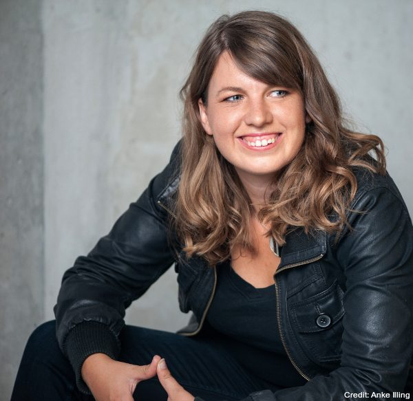
Neuroscientist · Author · Keynote speaker
Dr. Franca Parianen
Brain and hormone researcher, science communicator and bestselling author with Rowohlt. She brings research to stages, into books and onto television – with humour and citations. Talks in English and German.
Catch her at
- Keynotes
- Impulse talks
- Readings
- Science slams
- Interviews
- TV
“Brains, humour and citations.”
- PhDCognitive and neurosciences, Max Planck Institute Leipzig, Helmholtz Institute Utrecht
- AwardsScience slam champion, LifeScience Xplained Award 2024 | Sartorius Prize for New Communication
- Bestseller«Woher soll ich wissen, was ich denke, bevor ich höre, was ich sage», Rowohlt Verlag
- Science communicatorContributions to Perspective Daily, Psychologie Heute, taz, Deutschlandfunk and Quarks
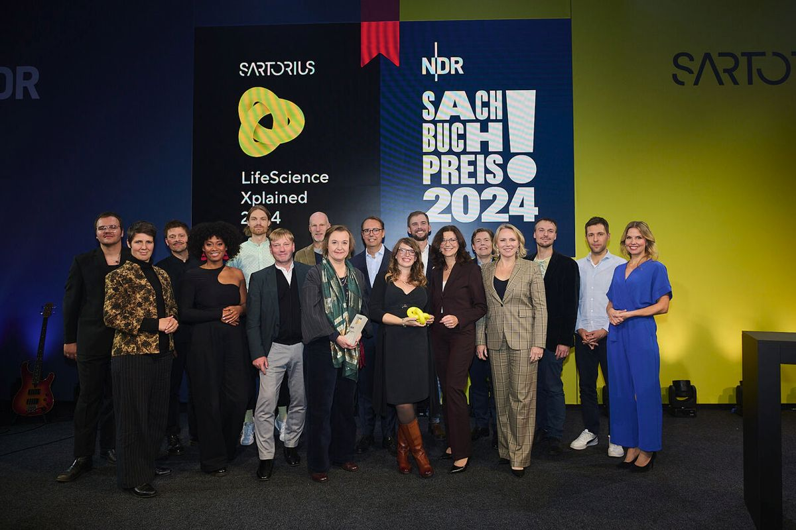
Dr. Franca Parianen is a brain researcher, science communicator and bestselling author. Equipped with a bachelor’s degree in public administration, studies in neuroscience and the matching doctorate, she reports from her field at the intersection of brain and society.
Alongside her first appearances as a science slammer and her research, including at the Max Planck Institute, she published with Rowohlt: first the bestseller «Woher soll ich wissen, was ich denke, bevor ich höre, was ich sage» (How am I supposed to know what I think before I hear what I say), then «Herz, Hirn und Hormone» (Heart, brain and hormones) and most recently the anthology «Weltrettung braucht Wissenschaft» (Saving the world needs science). Her books have been translated into French and Korean, among other languages.
Today the Berlin-based scientist appears regularly in print and on television, and on the stages of theatres, corporations and conferences. She also writes for the political arts pages and for the taz section Zukunft. For her talks she recently received the highly endowed LifeScience Xplained Award 2024 | Sartorius Prize for New Communication.
She speaks in English and German, in Germany and internationally.
Books
Science to read
On the social brain, hormones, fairness and what a world that listens to science might look like. Published in German; some are translated into French and Korean, among other languages.
-
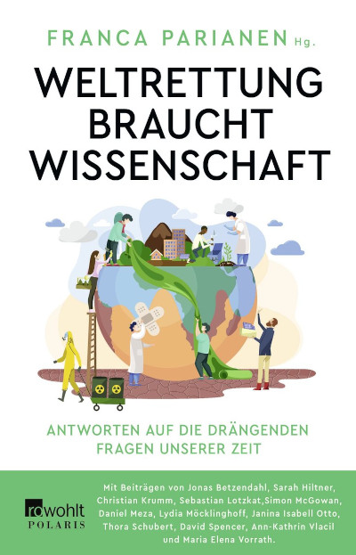
Weltrettung braucht Wissenschaft
Editor · Rowohlt Polaris, 2023
Learn more → -
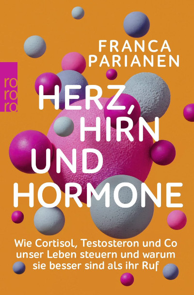
Herz, Hirn und Hormone
rororo paperback, 2023
Learn more → -
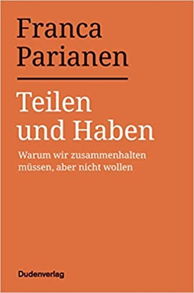
Teilen und Haben
Essay · Dudenverlag
Learn more → -
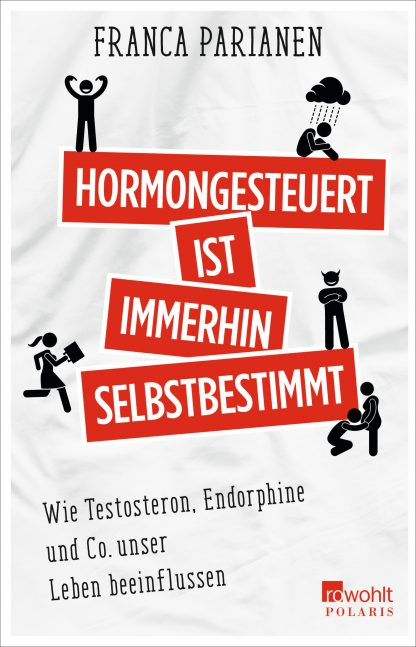
Hormongesteuert ist immerhin selbstbestimmt
Rowohlt Polaris, 2020
Learn more → -
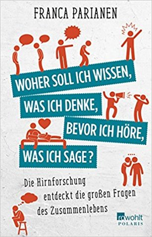
Woher soll ich wissen, was ich denke, bevor ich höre, was ich sage?
Bestseller · Rowohlt Polaris, 2015
Learn more →
Talks
Keynote topics
Keynotes and impulse talks from brain research for conferences, companies and stages – with humour and citations. In English or German, in Germany and internationally.
AI and the Brain
What remains of our thinking when we hand more and more of it over to technology?
The world is big and complex. To process it anyway, our brain outsources work – to calendars, calculators or colleagues. Whoever stores knowledge forgets it faster, but also has more room for something new. Yet what has long been a proven system reaches entirely new dimensions in a permanently connected world. New studies show that it is not only working with satnavs and autopilots that leaves its mark on our cognition, but also AI support in medical diagnoses.
So where is the line between cultural progress and mental laziness? Is every skill really worth protecting? And how can we use technology so that it boosts our cognition instead of limiting it?
A ride through the neuroscience of humans and machines reveals when we would rather do automatable tasks ourselves, why people are sometimes smarter online after all, and why the benefit of technology depends above all on how much we keep thinking for ourselves.
Resilience and Transformation
Stability through adaptation | How to stay steady when the ground is shifting
The brain shies away from change. We avoid uncertainty and loss of control, judge innovations more critically than the status quo and weigh possible losses more heavily than any gain. Even our goals in a crisis are mostly about getting through it unchanged – or at least returning to where we started as quickly as possible. It is no coincidence that many of our ideas of resilience come from engineering, where they describe steel girders.
But what if we have misunderstood how to deal with stress? What if these times demand change above all? And our attempt to stay unmoved is part of the problem?
A fresh look at resilience research shows that in times of rapid change, stability only comes from adaptation – and stress often comes from trying to avoid it. It is the same principle by which waves sweep us away less when we dive into them instead of waiting for the spray to hit us in the face. And it applies in medicine just as much as in research on brains or ecosystems. Under changing conditions, flexibility matters more than efficiency, specialisation becomes a relic and diversity even more of an advantage. But above all: it is better to lose your composure now and then than to lose your ability to respond.
Work and Motivation
Where the brain keeps its engine
How does the brain prefer to deal with challenges? By avoiding them, of course. A search for “stress-free” brings up millions of Google results. Yet a look at the hormonal system shows that we are doing stress hormones an injustice: adrenaline, cortisol and co. help us get up, go jogging, fall in love – or gear up for a challenge. Much of what stresses us – novelty, uncertainty and social interaction – is also what really gets our dopamine system going. In the end, the same hormones that drive us under the covers in chronic stress are the ones that give us focus and flow. So why do we often experience them so differently?
The latest research shows how we can inspire employees and reduce sick days, why loss of control is the decisive stress factor, how we can best structure our working day or immunise ourselves against overload – and why the ideal stress-free environment is not a blank space, but a garden.
The Social Brain: Sustainability and Cooperation
Survival of the Fairest
The human brain has unique social abilities. The only question is where they are hiding.
Throughout human history, cooperation has been not only our greatest talent but also our only chance. To that end, our ancestors developed not just the prefrontal cortex but a whole range of indispensable social skills. From empathy and theory of mind to a strong sense of fairness – what we now call soft skills is what makes living together possible in the first place. An entire civilisation built on the insight that those who share knowledge, (care) work and risks often end up with more. At least when the cooperation works.
Today, in the midst of the polycrisis and at the limits of our resources, this very ability to solve problems together has once again become a question of survival. High time to understand why we find it so hard right now. Under what conditions do people pull together – or not? Which thinking traps get in our way? And why are these super-social people never in my working group?
In her talks on the social brain, Parianen explains – depending on the setting – what it takes for humanity, or our team, to pull together again.
Digitalisation and Social Media
86 billion neurons like this
When two brains meet, things quickly get very complicated. So what must it be like between 8 billion?
Perspective-taking, compassion and irony – not every social skill moves smoothly into the digital space. Cognitive biases, groupthink and big emotions, on the other hand, travel through any medium. And hardly anywhere do they activate our reward system as skilfully as on social media. In the end, hostility often arises not because algorithms lock us into filter bubbles, but because they cleverly keep confronting us with each other. Yet where facial expressions and nuance are missing, a magic all of its own can emerge at the same time.
So what does it mean to suddenly spread our usual network of a hundred people across several continents? Which thinking errors make us talk past each other online, too? How do we shift the window of discourse in the comments section? And why is everyone on the internet always so mean?
Talks & media
On stage and on air
Keynotes and other appearances (a selection)
Talks
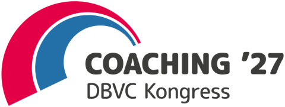
Coaching '27, DBVC-Kongress, ErfurtKeynote on the congress theme “Strengthening dialogue, supporting democracy”- Signal Security Summit, Köln“Anchoring secure behaviour for good: what we can learn from neuroscience”
- SUPERZART* Festival, Schauspielhaus HamburgOpening science slam at the festival “against loneliness”
- 6. Deutscher Fußverkehrskongress6. Deutscher Fußverkehrskongress, Bielefeld“Why people have to stick together but don’t want to (in traffic, too)”
- „Timmy – Die Hope stirbt zuletzt“, Ernst Deutsch Theater, HamburgPanel after the premiere: why empathy needs a face and a name
- Social Design Days 2024, NürnbergA humorous pitch on humans as social beings
- Der Deutsche Innovationspreis 2024Keynote at the German Innovation Award ceremony
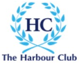
Harbour Symposium 2023, BaselSymposium of the HarbourClub, the network of chief communications officers, hosted by Roche- 10. IHK-Unternehmerinnentag, MünchenImpulse talk at the Munich Chamber of Commerce’s day for women entrepreneurs
Show all 21Show less
- 11. Bayerischer CSR-Tag
- Social Media Marketing Days
- herCAREER Expo, München
- Kulturelle Landpartie
- visitBerlin BEST-Ival
- Frankfurter Zukunftskongress
- Polytechnische Gesellschaft, Frankfurt
- ZEIT-Stiftung
- LEARNTEC, Karlsruhe
- B2B-Vertriebskongress, Wien
- IdeenExpo, Hannover
- Deutsche Meisterschaft im Science Slam
Press
- NANO Talk: Neues Sprechen – wie uns unsere Sprache verrätWith Stephanie Rohde: how words change feelings, decisions and even the brain
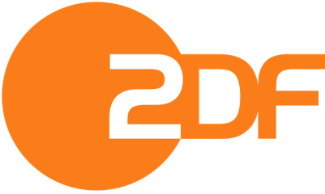
Eckart von Hirschhausen: Der Sünde auf der SpurInterview on social cognition and envy- Markus LanzGuest on the shows of 25 April 2017 and 3 October 2017
- Die Liebe ist eine NaturgewaltInterview on hormones and love
- Wie der Zyklus das Liebesleben bestimmtInterview
- Sie hat die beste Antwort auf „Du hast wohl deine Tage“Interview: men are driven by hormones, too
- BrigitteKooperieren als Gesellschaft: Frauenfreundschaften sind buchstäblich lebensrettendOn female friendship and cooperation
- Scobel: Herz intakt?Guest of Gert Scobel
- Adrenalin, Herzklopfen und geweitete PupillenArticle by the HarbourClub
Show all 25Show less
- Aurel Original
- Tietjen und Bommes
- Scobel: Die Magie des Spielens
- Timmy – Die Hope stirbt zuletzt
- Hormone – Zwischen Wissenschaft und Vorurteil
- Spannende Schnittstelle zwischen Herz, Hirn und Gesundheit
- Warum hört die Politik nicht auf die Wissenschaft?
- Teilen und Haben
- Hormone – Freund oder Feind?
- Franca Parianen: Teilen und Haben
- „Wenn wir uns zusammentun, haben wir alle mehr.“
- Kuschelhormone & Gerechtigkeit
- „Alle teilen das Gleiche: Frust“
- Mit Hirn, Herz und Hormonen
- Hormongesteuert?
- Hormon-Expertin Dr. Franca Parianen
Writing
In brief
Articles and columns on brain research, health, the environment and society, for taz, Berliner Zeitung and Deutschlandfunk Kultur, among others. The texts are in German.
- tazExtreme Hitze schadet den NierenRead article →
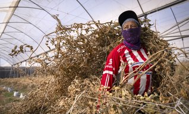
- tazViel Lärm um LockdownsRead article →
- tazIn Deutschland praktizieren mehr Ärzt*innen aus dem AuslandRead article →
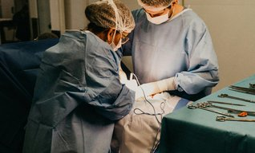
- tazKugelspinnen: Manipulation im NetzRead article →
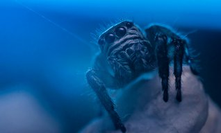
- tazKomplikationen in der Schwangerschaft: Wenn der Blutzucker verrückt spieltRead article →
- tazIntelligenzforschung: Sind Pferde schlauer als Menschen?Read article →
- tazMenschliche Denkfalle - Darf’s ein bisschen weniger sein?Read article →
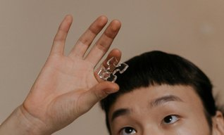
- tazBehandlungen durch Ärztinnen: Hilfe, ein ArztRead article →
Show all 33 textsShow less
- tazSchwermetalle in Tampons: Wie schlimm sind sie wirklich?Read article →
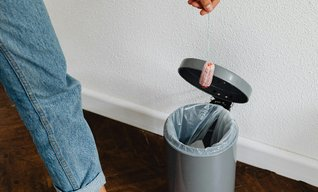
- tazUmweltzonen verringern AsthmaRead article →
- tazImmer weniger Spermien: Wann kommt das Spermageddon?Read article →
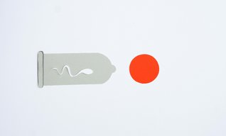
- tazSoziale Fähigkeiten - Ein Mammut fängt man nicht alleinRead article →
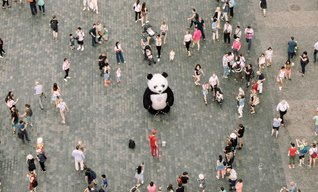
- tazGeschlechtsidentität von Minderjährigen: Neue Leitlinie schafft KlarheitRead article →
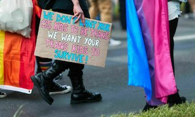
- tazLuftqualität und Suizidrate: Saubere Luft gibt LebensmutRead article →
- tazAngststörung nach der Geburt: „Ich kann nicht ins Kinderzimmer“Read article →
- tazVerbotener Weichmacher DNHP: Wie gefährlich ist der Stoff?Read article →
- tazTeil 2: Zeit für eine Luftveränderung - So wird die Luft reinRead article →

- tazTeil 1: Zeit für eine Luftveränderung - mit Filter und UV-Licht gegen Infektionen und SchadstoffeRead article →
- tazHaut das Geld raus! Investitionen in Gesundheit, Klima und Soziales, die mehr einbringen, als sie kostenRead article →
- tazMenschliches Gehirn in der Klimakrise: Die Fantasie spielt LegoRead article →
- tazInnovationen in der Schifffahrt: Klar zur Wende!Read article →
- Berliner ZeitungNeurowissenschaftlerin zur HU: Das ist keine Cancel Culture, sondern FortschrittRead article →
- Deutschlandfunk KulturEgozentrische Verzerrung - Wir sollten nicht von uns auf andere schließenRead article →
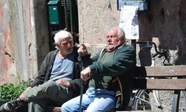
- Deutschlandfunk KulturVermögen und Macht - Unsere völlig falsche Vorstellung vom TeilenRead article →
- Spektrum Gehirn & GeistGruppendenken: Die Gräben in unseren KöpfenRead article →
- BarbaraWas die Sexhormone weckt: Unsere Lust, euer ProblemRead article →
- Verstehe sich, wer kannDie Entdeckung des Menschen: Wie viel Patent braucht die Wissenschaft?Read article →
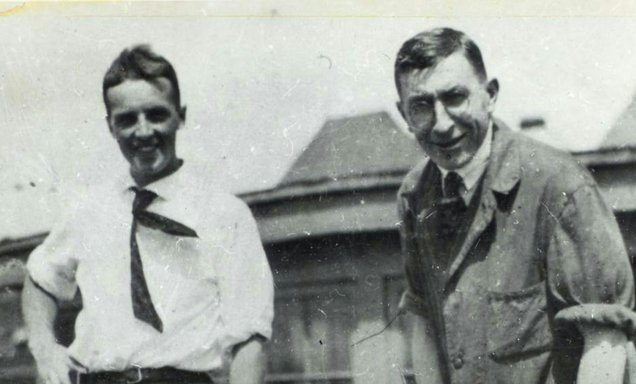
- Verstehe sich, wer kannIn den Köpfen der Leute: Was man noch darfRead article →
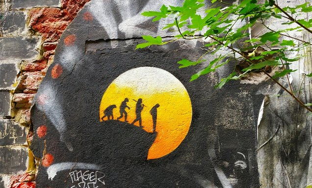
All texts are also in the torial portfolio (in German).